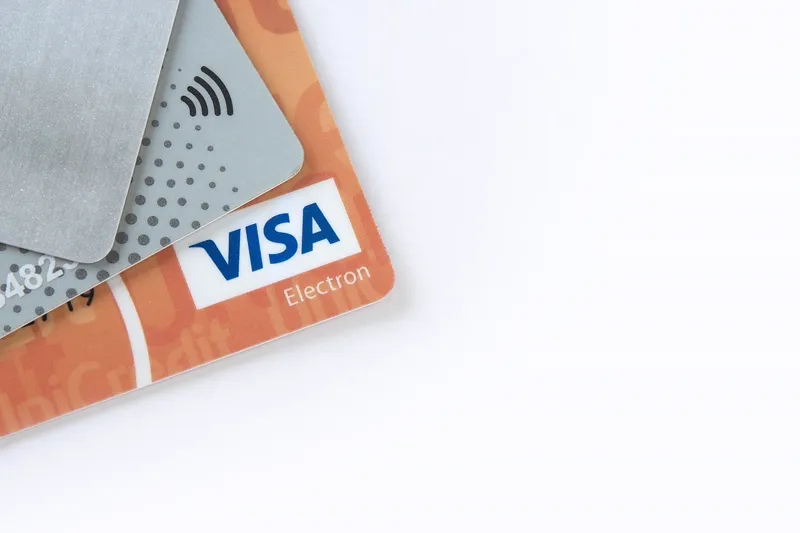

O que é o split payment
Split payment (pagamento dividido/fracionado) é um mecanismo previsto na Lei Complementar 214/2025 que faz a separação automática do imposto (IBS e CBS) no momento do pagamento eletrônico de uma compra. Em vez do valor total cair primeiro na conta do vendedor pra ele recolher o imposto depois, uma parte do valor pago já é direcionada diretamente para os cofres públicos, em tempo real ou quase real.
💡 É uma mudança de "encanamento" do sistema tributário — o objetivo não é cobrar mais nem menos imposto, é garantir que o imposto que já é devido realmente chegue ao governo, sem depender só da boa-fé (ou da situação financeira) de quem vendeu.
Como funciona, passo a passo
Você paga
Com cartão, Pix ou boleto, no valor total do produto/serviço
O sistema calcula
A instituição de pagamento identifica quanto do valor é IBS/CBS
Divide automaticamente
Uma parte vai pro governo, outra pro vendedor
Tudo em segundos
Sem que você perceba qualquer diferença no ato da compra
Isso muda quanto eu pago?
Não. O preço que você vê na etiqueta, no cardápio ou no carrinho de compras é o valor que você paga — o split payment não adiciona nada a mais. A diferença acontece inteiramente depois do pagamento, na forma como esse dinheiro é repartido entre o vendedor e o governo.
✅ Pagamento em dinheiro físico não passa pelo split payment, porque não existe uma instituição financeira no meio da transação pra fazer a divisão — mas isso não significa que o imposto deixa de ser devido, só que ele não é segregado automaticamente nesse caso.
Por que esse mecanismo existe
Hoje, quando você compra algo, o vendedor recebe o valor total e fica responsável por calcular e recolher o imposto depois, dentro do prazo legal. Esse intervalo de tempo — e a dependência da boa-fé do vendedor — é uma das principais brechas para sonegação no Brasil. O split payment reduz essa brecha ao fazer parte da arrecadação acontecer automaticamente, no momento da venda, sempre que o pagamento for eletrônico.
Dúvidas sobre a Reforma Tributária?
Fale com a equipe FelizCred no WhatsApp — sem custo, sem compromisso.
💬 Falar no WhatsAppPerguntas frequentes
O split payment faz eu pagar mais imposto?
Não. O valor total que você paga por um produto ou serviço não muda por causa do split payment. O que muda é só o caminho que o dinheiro do imposto percorre depois que você paga — uma parte vai direto para o governo, em vez de passar pela conta do vendedor primeiro.
O split payment vale pra pagamento em dinheiro?
Não. O mecanismo só funciona em pagamentos eletrônicos — cartão, Pix, boleto — porque depende de uma instituição financeira ou arranjo de pagamento no meio da transação pra fazer a divisão automática. Em dinheiro físico, não existe esse intermediário.
Por que o governo criou o split payment?
Pra reduzir a sonegação. Hoje, o vendedor recebe o valor total da venda e depois precisa recolher o imposto por conta própria — o que abre espaço para omissão de receita. Com o split payment, uma parte do imposto já sai direto pro governo no momento do pagamento.